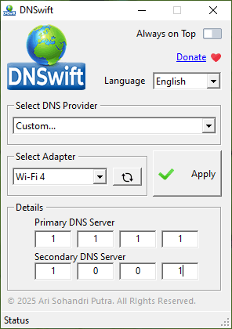

|
| Home |
| FAQ |
| Support |
Overview
DNSwift is a lightweight Windows application designed to simplify the process of changing DNS server settings on your network adapters. It provides an intuitive interface to switch between popular DNS providers (like Google DNS, Cloudflare, OpenDNS, Quad9) or set custom DNS servers with ease.
Features
- Easy DNS Switching: Quickly change DNS settings for your network adapter.
- Predefined DNS Providers: Supports:
- Google DNS (8.8.8.8, 8.8.4.4)
- Cloudflare DNS (1.1.1.1, 1.0.0.1)
- OpenDNS (208.67.222.222, 208.67.220.220)
- Quad9 (9.9.9.9, 149.112.112.112)
- Custom DNS Support: Manually enter any DNS server IP.
- Reset to Default (DHCP): Revert to automatic DNS settings.
- Multi-Language Support: English, Indonesian, Chinese, Thai, Vietnamese.
- Persistent Settings: Saves your preferences for future use.
Usage Guide
1. Selecting a Network Adapter
• Open DNSwift.
• From the Network Adapter dropdown, select the active network connection.
2. Choosing a DNS Provider
• From the DNS Provider dropdown, choose:
◦ Default (DHCP)
◦ Google DNS
◦ Cloudflare DNS
◦ OpenDNS
◦ Quad9
◦ Custom...
3. Setting Custom DNS (Optional)
• Primary DNS (e.g., 8.8.8.8)
• Secondary DNS (e.g., 8.8.4.4)
4. Applying DNS Settings
• Click "Apply" to set the selected DNS.
• Notification will confirm or show an error.
5. Resetting to Default
• Select Default (DHCP)
• Click Apply DNS to revert to automatic settings.
6. Refreshing Network Adapters
• Click "Refresh Adapters" to reload connections.
7. Language Selection
• Use dropdown to select:
◦ English (Default)
◦ Indonesian
◦ Chinese
◦ Thai
◦ Vietnamese
© 2025 Ari Sohandri Putra. All Rights Reserved.
| Download DNSwift 1.0 Build 2025.05.12 | ||
| Download | 1.5 MB | Win7/8/10/11 |
| DNSwift Preview | ||
 |
||
|  | ||